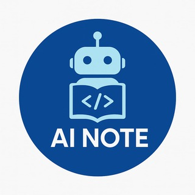

오픈AI, ChatGPT의 Chat 및 Work 모드 통합 테스트 시작

작성자 실명과 약력은 미확인입니다. 공개 피드와 선정 이유로만 소개합니다.
모델·에이전트 소식이 매우 잦다. 속보형과 실습형을 섞기 위한 축이다.
세 줄로 읽기
: 소규모 사용자 그룹의 피드백을 수집하고 개선 작업을 거친 뒤 보다
원문 문장에서 고른 요약입니다. 숫자와 사실은 원문에서 다시 확인하세요.
핵심 포인트
- 1오픈AI는 일반 대화 기능(Chat)과 에이전트 기반 업무 수행 기능(Work)을 통합한 사용자 경험을 일부 Pro 구독자 대상으로 제공하기 시작
- 2: 전날에도 오픈AI는 앱 인터페이스 간소화, 응답 속도 개선, Chat과 Work 통합을 통해 연말까지 일상적인 ChatGPT 사용 경험을 크게 개선할 것이라고 언급
- 3: 다만 통합 이후의 구체적인 모델 선택 방식과 사용량 제한, 전체 사용자 대상 출시 일정은 이번 발표에서 미공개
이 블로거의 최근 글
- Moonshot AI가 과학 연구를 위한 Kimi API 지원 프로그램을 시작했습니다.
- 글로벌 기업이 제공하는 무료 온라인 교육 플랫폼 11곳
- 미국 연방통신위원회가 스페이스X의 우주 AI 데이터센터 프로젝트 스타마인드에 최대 100만 기의 위성 배치를 조건부 승인했습니다.
- Google AI 구독자는 매월 Google Cloud 크레딧을 받을 수 있습니다.
- Google 유료 AI 구독 상품에 숨겨진 강력한 혜택들이 공개됐습니다
같은 분류의 다른 글
- Kagi Watch - 어린이를 위한 화면 없는 무전기
- Show HN: 4년에 걸쳐 Vim 매뉴얼 한 권을 완성했습니다
- 코리아 핀테크 위크 2026에서 카카오페이 ai에이전트 서비스 데모 참여했는데...
- [🎤인터뷰] 월 천만 명 방문 페이지, AI와 알잘딱하게 마이그레이션하기
- C++에서 = default와 {}는 같은 생성자가 아님
공개 페이지에는 짧은 소개와 원문 링크만 있습니다. 원문 전문은 올리지 않습니다.